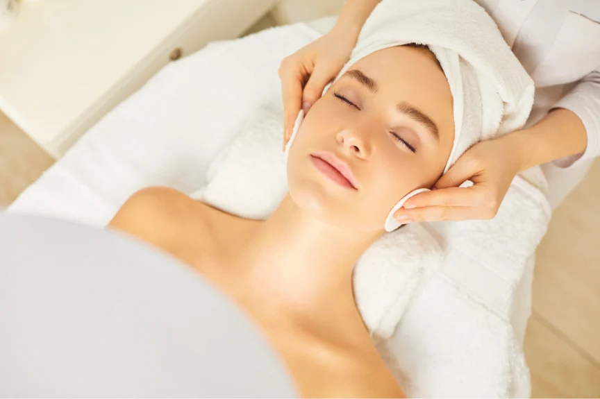
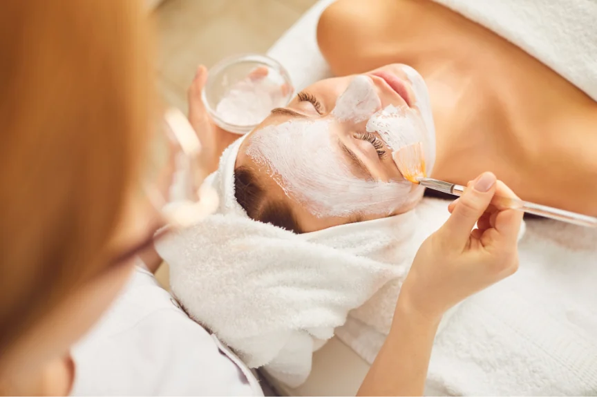
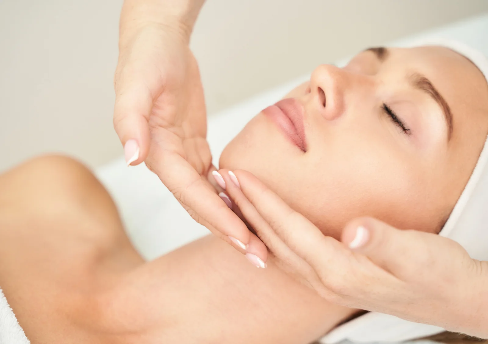
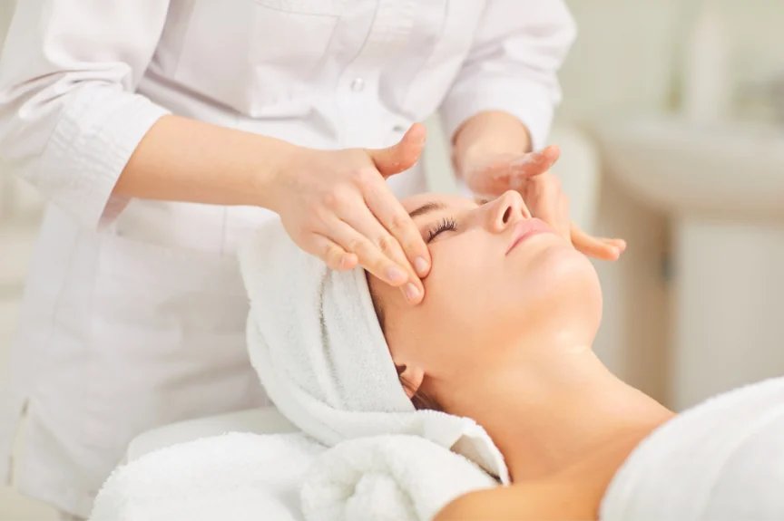

Skin regeneration
Kezelés érzékeny bőrre · 90 perc · 35 év fölött
A bőröd egyedi, ezért a kezelésed is legyen az. Hidratálás, bőrfiatalítás és anti-akné ápolás, a bőröd aktuális igényeihez igazítva.


Növényi összetevőkre és célzott hatóanyagokra épülő ápolás. A személyre szabott kezelési tervben a bőröd érzékenységét és hidratáltságát is figyelembe veszem.

Peptidekre épülő arcápolás, a bőrfiatalító kezelési terv részeként. A kezelés során az arc mellett a nyak és a dekoltázs ápolására is lehetőség van.

Akné, egyenetlen bőrkép vagy bőrfiatalítás: a megfelelő eljárást a bőröd állapotának felmérése után választjuk ki.
A problémás bőr ápolásához otthoni bőrápolási tanácsokkal is segítek.
Egy kezeléssorozat több alkalmon át biztosít személyre szabott törődést. Ha bizonytalan vagy, az első találkozáskor segítek választani.
79 000 Ft
Feszesebb, simább, üdébb bőr, kíméletes bőrfiatalító ápolással.
99 000 Ft
Intenzív bőrmegújító ápolás, a bőr rugalmasságának támogatására.
59 000 Ft
Célzott törődés a problémás bőrnek, 14–19 évesek számára.
„Korábbi rossz tapasztalatok miatt sokáig nem mertem kozmetikushoz járni, de ez az itt töltött első alkalmat követően megváltozott. A bőröm minden kezelés után szinte ragyog, remekül érzem magam, és Eliza segítségével sikerült kialakítanom a helyes, bőrtípusomnak megfelelő arcápolási rutint. Szívből ajánlom!”
„Eliza nagyon kedves, csupaszív kozmetikus, a kozmetika csodaszép, tiszta, hangulatos, mindig örömmel járok ide vissza. Legutóbb a 10 alkalmas arcfiatalító kezelést vettem igénybe, és az eredmény magáért beszél, azóta több pozitív visszajelzést is kaptam ismerőseimtől. Csak ajánlani tudom Elizát!”
Nem kell előre tudnod, melyik kezelésre van szükséged. Segítek eligazodni.
Telefonon vagy az űrlapon keresztül tudsz bejelentkezni. Az időpontot személyesen egyeztetem vissza.
Megismerem a bőröd állapotát és arcápolási szokásaidat, majd összeállítom a kezelési tervet.
A személyre szabott kezeléshez relaxáló arcmasszázs is társul, hogy te is feltöltődhess.
Praktikus útmutatást kapsz a bőrödnek megfelelő mindennapi ápolás kialakításához.
Kérdésed van a kezelésekről, vagy időpontot szeretnél egyeztetni? Keress bizalommal, és segítek megtalálni a számodra legjobb megoldást!
Kizárólag előre egyeztetett időpontra.